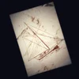

@no.michael.here
🜃 The temple waits. A living story you can enter. The first stone glows faintly:
22 down, 88 to go. When it's lit, the priest will speak ↯
The Ritual (tap "Enter Here" after the page loads)
Temple Offering - $11
FAQs About the Temple

Parables and Lore
Temple Artifacts
Backstage Notes
Waiting Room